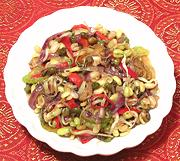

|
Bean Sprouts, Celery & CocklesIndia - Andaman Islands - | ||||
| Makes: Effort: Sched: DoAhead: |
4 side ** 3 days Yes |
This makes a fine cold vegetable salad or warm side dish for a Western menu. In India a Kootu would be served hot as one of the accompaniments to the rice. The clams are more a flavoring than a feature ingredient. | |||
|
1/2 5 1 3 3 2 1-1/2 1 1/4 |
# oz cl oz oz T t t |
Bean Sprouts (1) Onion, red Garlic Chilis, fresh (2) Celery Baby Clams (3) Oil Mustard seed, blk Salt |
Prep - (3 days / 10 min work)
|